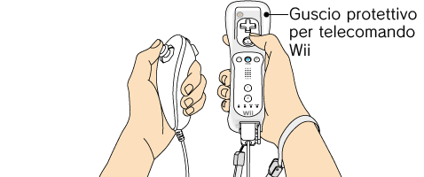
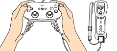

3 |
Uso del controller |
 |
Ci sono diversi modi per impugnare il telecomando Wii ed essi variano a seconda che lo si usi da solo o insieme ad altri accessori.

 Uso del telecomando Wii 
Uso del controller tradizionale pro Nota: consulta sempre il manuale di istruzioni del controller che stai utilizzando.


Nota: se il laccetto che stai utilizzando presenta una levetta, assicurati che questa sia in posizione di chiusura. In questo modo eviterai che il laccetto si allenti.
Se i pulsanti o gli stick di un Nunchuk o controller tradizionale, all’accensione della console o durante il collegamento con il telecomando Wii, non si trovano nella posizione neutra (*), il controller non funzionerà in maniera corretta. Segui queste istruzioni per registrare nuovamente la posizione neutra:
* Per “posizione neutra” si intende la posizione dei pulsanti quando non vengono premuti e degli stick quando non vengono inclinati (vedi le immagini sottostanti).
|
 ,
,  ,
,  e
e  sul telecomando Wii per circa tre secondi.
sul telecomando Wii per circa tre secondi.

 |
 |
 |